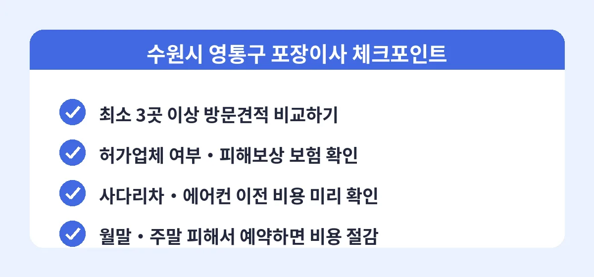

수원시 영통구는 영통동, 망포동, 광교신도시까지 대단지 아파트가 밀집한 지역이라 이사 수요가 일 년 내내 꾸준한 곳입니다. 그만큼 활동하는 이삿짐센터도 많아서, 어떤 업체를 고르느냐에 따라 같은 조건에서도 견적이 수십만 원까지 차이가 납니다. 특히 광교 쪽 신축 고층 아파트는 사다리차 이용 조건과 엘리베이터 사용 규정이 단지마다 달라서, 방문견적 없이 전화로만 계약하면 이사 당일 추가 요금이 붙는 경우가 적지 않습니다.
영통구 기준 포장이사 비용은 짐 양과 이동 거리에 따라 달라지지만, 일반적으로 원룸·투룸은 40만~70만 원대, 24평형 아파트는 90만~130만 원대, 32평형 이상은 130만~180만 원대에서 형성됩니다. 여기에 5층 이상 사다리차 비용, 에어컨 이전 설치비, 정리정돈 서비스가 추가되면 금액이 더 올라갑니다. 월말과 손 없는 날, 주말에는 같은 조건이라도 20~30% 비싸지기 때문에 일정 조율이 가능하다면 평일 이사가 유리합니다.

업체마다 성수기 일정, 보유 차량, 인력 상황이 달라서 같은 날짜라도 견적 차이가 큽니다. 비교견적 서비스를 이용하면 한 번의 신청으로 영통구에서 활동하는 여러 업체의 견적을 받아볼 수 있고, 업체들이 서로 경쟁하는 구조라 처음부터 합리적인 가격이 제시되는 경우가 많습니다. 이사 예정일 최소 2~3주 전에 견적을 받아두면 원하는 날짜에 좋은 조건으로 예약할 수 있습니다.
Q. 포장이사와 반포장이사는 뭐가 다른가요?
포장이사는 짐 싸기부터 운반, 새집 배치와 기본 정리까지 업체가 전부 맡는 방식이고, 반포장이사는 작은 짐은 직접 싸고 큰 가구와 운반만 업체가 담당하는 방식입니다. 반포장은 포장이사보다 20~30만 원가량 저렴하지만 손이 많이 가므로 짐이 적은 세대에 적합합니다.
Q. 광교 고층 아파트인데 사다리차가 안 되면 어떻게 하나요?
고층 세대는 엘리베이터를 이용한 작업으로 진행되며, 관리사무소에 엘리베이터 사용 신청과 보양 여부를 미리 확인해야 합니다. 이 조건을 방문견적 때 알려야 정확한 금액이 나옵니다.
Q. 견적은 언제 받는 게 좋나요?
이사 예정일 기준 2~3주 전이 가장 좋습니다. 월말이나 손 없는 날로 이사한다면 한 달 전에는 예약을 마쳐야 원하는 업체를 잡을 수 있습니다.